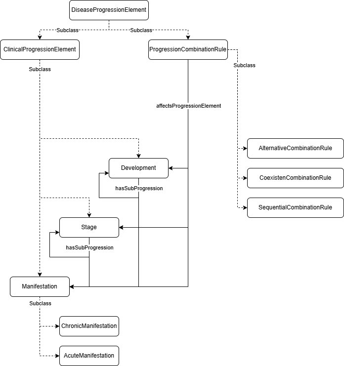

Progression
We will continue this section by explaining the main classes available to represent the progression of a disease.
3.2. Modeling Disease Progression

DiseaseProgression (osdi:DiseaseProgression) models how the disease develops. Its subclasses allow for different level of detail and characterize the different ways in which the disease signs and symptoms occur:
- Development (
osdi:Development): A specific progression pathway, such as the natural history without screening. This is also useful when little detail is provided on the specific manifestations of a disease (e.g. you just need to model mild and severe developments) - Manifestation (
osdi:Manifestation): Specific symptoms categorized as Acute (osdi:AcuteManifestation) (e.g., seizures, hypotonia, skin problems) or Chronic (osdi:ChronicManifestation) (e.g., cognitive deficits, optic atrophy, hearing loss). - Stage (
osdi:Stage): Phases in the progression of a disease, such as those used to describe an oncological condition.
All of these subclasses can be combined to create a detail view of the disease. Hence, you may define Stages or Manifestations specific to certain Development, and also Manifestations specific to certain Stage. For more complex structures, OSDi defines Disease Progression Sets (osdi:DiseaseProgressionSet). These sets include:
* CoexistentDiseaseProgressionSet (osdi:CoexistentDiseaseProgressionSet) describes a set of progressions (manifestations, stages...) that may occur simultaneously (e.g. retinopathy and nephropathy in diabetes).
* AlternativeDiseaseProgressionSet (osdi:AlternativeDiseaseProgressionSet) describes a set of progressions (manifestations, stages...) that are mutually exclusive, i.e., they can not occur simultaneously (e.g. mild and severe development of a disease).
* SequentialDiseaseProgressionSet (osdi:SequentialDiseaseProgressionSet) describes a set of progressions (manifestations, stages...) that appear sequentially. Unlike AlternativeDiseaseProgressionSet, where progressions may appear in any order, in this case each new progressions replaces the former.
Let's start by representing the specific manifestations: seizures or skin problems are acute problems, and they are therefore, modeled as AcuteManifestations. Conversely, hearing loss or cognitive deficit should be treated as ChronicManifestations.
TTL Example (manifestations):
osdi:BD_Seizures
a osdi:AcuteManifestation ;
rdfs:label "Seizures due to BD"@en ,
"Crisis epilépticas debidas a DB"@es ;
osdi:hasDescription "Acute seizures occurring in untreated or late-treated profound biotinidase deficiency, usually within the first year of life."@en .
osdi:BD_SkinProblems
a osdi:AcuteManifestation ;
rdfs:label "Skin problems due to BD"@en ,
"Problemas cutáneos debidos a DB"@es ;
osdi:hasDescription "Cutaneous manifestations (eg dermatitis, rash) associated with profound biotinidase deficiency in infancy."@en .
osdi:BD_HearingLoss
a osdi:ChronicManifestation ;
rdfs:label "Sensorineural hearing loss due to BD"@en ,
"Hipoacusia neurosensorial debida a DB"@es ;
osdi:hasDescription "Long-term sensorineural hearing loss attributed to untreated or late-treated profound biotinidase deficiency, considered an irreversible chronic complication in the model."@en .
osdi:BD_CognitiveDeficit
a osdi:ChronicManifestation ;
rdfs:label "Cognitive deficit due to BD"@en ,
"Déficit cognitivo debido a DB"@es ;
osdi:hasDescription "Long-term cognitive impairment attributed to untreated profound biotinidase deficiency."@en .
Since all the manifestations can occur simultaneously, they can be grouped together into a DiseaseProgressionSet.
TTL Example (set of disease progressions):
osdi:BD_ManifestationSet
a osdi:CoexistentDiseaseProgressionSet ;
rdfs:label "Set of manifestations for BD"@en ,
"Conjunto de manifestaciones para DB"@es ;
osdi:hasDescription "Set of acute and chronic manifestations for untreated profound biotinidase deficiency. Any combination (including none) is allowed in the decision model."@en ;
osdi:hasDiseaseProgression osdi:BD_Seizures ;
BD_SkinProblems ;
BD_HearingLoss ;
BD_CognitiveDeficit .
The two forms for BD (profound and partial) can be treated in many different ways in a model: we could define two different populations for each of the forms, and we could even consider them as different diseases. However, in this tutorial, we will consider them as Developments.
TTL Example (Developments for forms of DB):
osdi:BD_ProfoundBD_Development
a osdi:Development ;
rdfs:label "Reference development of profound BD without screening"@en ;
# Links to sets of acute and chronic manifestations, and death
osdi:hasDiseaseProgression osdi:BD_ManifestationsSet .